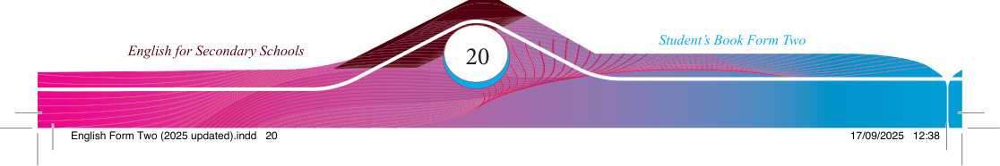

Exercise 2.2
The following description misses cohesive devices. Fill in the blanks with appropriate words or phrases to create a smooth and connected narrative.
Read your version for the class to comment on whether it fl ows correctly.
Paragraph
The forest was very quiet, _____________ the wind was moving the leaves. Some of the trees were very old, with twisted branches that looked like fi ngers. _____________ the quiet felt strange,
_____________ it made the forest feel mysterious. The path went deeper into the woods, _____________ the light got darker with each step. _____________, a distant howl broke the silence, and echoed through the trees.
(f) Read carefully the story “The Forest’s Last Stand” and answer the questions that follow.
The Forest’s last stand
It was a sunny morning, Ntiyamagwa, a passionate environmentalist, went for her daily hike in the forest. As she made her way through the towering trees, she met her friend Khalid, who was setting up his camera.
First, the forest was beautiful and full of life. Trees gave shelter to countless animals,
and the air was fresh. The forest also had a variety of plants used by villagers for medicine and food.
As time passed, people from the town began to view the forest as a way to make money. They started cutting down trees for fi rewood. As a result, the forest began to shrink.
Although the environmentalists warned them about the harm, deforestation continued.
The villagers saw the rivers beginning to dry up and the animals disappearing. In
contrast, the townspeople, who were making money from cutting down trees, ignored
the signs. They only cared about their gains.